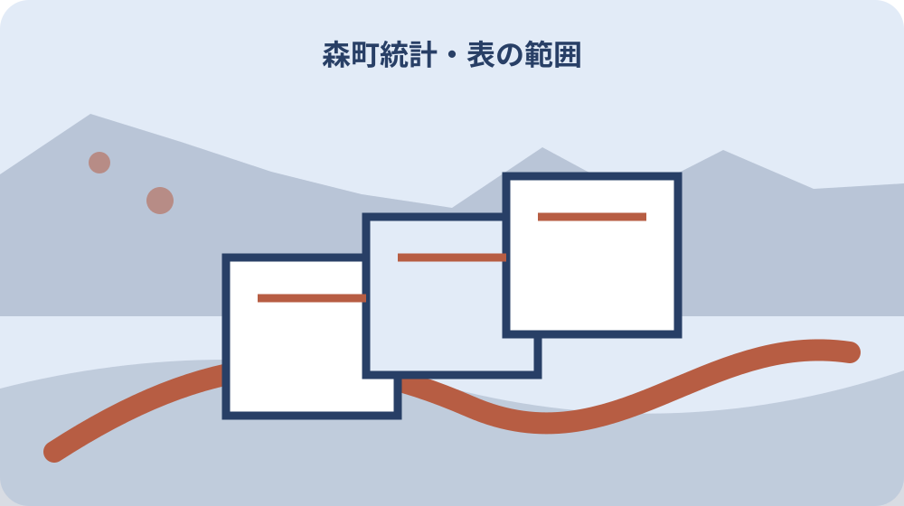

先に結論を確認する
この記事の答え：ページの更新日だけでなく、数値が示す基準日を書きます。例えば2026年7月1日現在の人口なら、その日付を人口・男女別・世帯数と一組にし、取得日は別欄にします。
森町で最初に照合する条件：森町の人口値を転記するときは、ウェブ更新日ではなく表が示す基準日を値と一組にする。
数値の前に表名・基準日・単位を書く
森町の人口や世帯数を家族の資料へ写すとき、数字だけを一列に並べると、後から何を数えた値か分からなくなります。最初に統計表名、表番号、対象地域、基準日または期間、単位、注記、出典URL、取得日を置き、その下へ数値を転記します。
同じ16432という値でも、「何月何日現在の総人口」と分からなければ翌月値と比較できません。ページを見た日と数値の基準日は別です。ウェブ更新日は資料の掲載・修正時点として残し、人口が表す時点の代わりには使いません。
単位も見出しから離しません。人、世帯、戸、件、台、千円、平方キロメートル、ヘクタール、割合は、数字の桁が似ていても意味が違います。表全体の上に一度だけ単位がある場合は、家族メモの各列へ補って転記します。
この記事で作るのは、数字を多く集めた一覧ではなく、元表へ戻れる統計カードです。空欄、記号、脚注も値の一部として扱い、分からない箇所は「未確認」とします。数字を先に解釈せず、何をどう数えた表かを固定します。
月別人口の現在値と更新日を分ける
森町公式の月別人口ページは、2026年7月1日現在として総人口16432人、男性8225人、女性8207人、6737世帯を掲載しています。統計カードには四つの値を同じ基準日でまとめ、ページ更新日と取得日を別の欄へ置きます。
男性と女性の合計を自分で計算して総人口欄へ上書きしません。公式表の各値を転記し、検算結果は確認欄に置きます。もし合わない場合も、転記ミス、更新差、集計条件などを確認する前に公式値を修正しないことが重要です。
同ページは人口統計表のほか、1歳単位、町名別、行政区別の人口PDFを分けて案内しています。一つのページに並ぶからといって、列や地域区分が同じとは限りません。利用したPDF名、ファイル名、表題をカードごとに残します。PDFを保存する場合は取得日をファイル名か台帳へ付け、同名ファイルの新版で静かに置き換えません。
月別人口は変化を追いやすい一方、一か月の増減だけで長期傾向を決める資料ではありません。転入転出、出生死亡、集計修正など内訳を確認していない段階では、増えた理由・減った理由を家族の推測で埋めません。複数月を同じ定義で並べてから読みます。
年度版統計の目次から表の所在を固定する
森町の令和4年度版統計は、土地・気象、人口、事業所、工業、商業、農林業、運輸、水道、土木・建設などを章に分けています。引用カードでは冊子名だけで終えず、章番号、章名、表番号、表題、PDFページを順に写し、同じ冊子内の別表と取り違えないようにします。
「令和4年度版」は冊子を識別する表示であり、全ての表が令和4年度だけを対象にするという意味にはしません。個別表が示す年次、年度、基準日、期間を表題と注記から読みます。発行・公開時点と統計の対象時点を一列へまとめないことが重要です。
目次には、住民基本台帳人口、国勢調査人口、人口動態など、似た語を含む別表も並びます。引用する表を決めた理由を一文で残し、表名が似ているというだけで数値をつなぎません。候補表を変更した場合は、以前の表番号を消さず選び直した日と理由を履歴へ加えます。
PDF表示ページと冊子に印刷されたページがずれる場合は両方を控えます。家族がブラウザーで開くときはPDFページ、紙に印刷した冊子で探すときはノンブルが手掛かりになります。URLだけでなく目次上の位置を残せば、掲載場所が変わっても資料名から探し直せます。

分野ごとに資料作成元と対象期間を控える
年度版統計は一冊でも、表の資料作成元は分野ごとに異なり得ます。気象、地価、人口、事業所、鉄道、水道、道路を同じ時点に町が一括調査したとは考えません。表末尾の「資料」欄、注記、問い合わせ先を読み、掲載者と元データ作成者を別欄へ置きます。
資料元が国・県・事業者・町の担当課のいずれかで、更新周期や確定時期が変わる可能性があります。運輸の利用者数と人口現在値を同じ年表示だけで比較せず、暦年、会計年度、特定日、複数月の期間のどれかを確認します。対象期間が見当たらなければ未確認にします。
分野をまたいだ説明を作るときは、各カードの基準日を横に並べます。人口、住宅、事業所、道路の値が別々の時点なら、「同時点の森町」とは表現しません。最も古い表と新しい表の差を明示し、現在状況の断定ではなく資料収録時点の比較と書きます。
資料作成元へ確認が必要な場合も、統計冊子全体を尋ねるのではなく、章・表番号・行・注記を示します。森町ページの担当と元データ機関のどちらへ聞くか分からないときは、掲載ページの窓口へ質問先を確認します。回答日と案内された機関をカードの履歴へ残します。
人・世帯・戸・件・面積の単位を保つ
統計カードの列名には、項目名と単位を一組で書きます。「人口（人）」「世帯数（世帯）」「住宅（戸）」「申請（件）」のように表示すれば、家族が別表から値を追加するときに単位違いへ気付きやすくなります。
金額は円、千円、百万円の違いを確認します。元表が千円単位なら、家族メモだけ円へ換算せず元単位を保持し、必要な場合は換算列を作ります。換算式と丸め方を残さなければ、桁が大きい値ほど元表との照合が難しくなります。
面積は平方メートル、ヘクタール、平方キロメートルを混ぜません。町全体の面積と一筆の土地面積は規模も資料目的も違います。単位換算が正しくても、統計上の地目別面積を登記面積や現況測量の代わりには使えません。
割合は分母を記録します。高齢化率、就業割合、構成比など百分率だけを抜くと、何人・何世帯を基にしたか分かりません。表に分母がない場合は関連表を探し、推計で算出した値には「自作」と計算条件を明記します。
脚注記号を数値と同じ行へ転記する
総務省統計局は、統計表の説明や注釈を数字またはアルファベットを付けた脚注で示すと説明しています。数値だけを表計算へ貼り、脚注を省くと、対象除外、推計、変更、内数など重要な条件が失われます。記号列と注記本文をカードへ持たせます。
0、ハイフン、三点リーダーは見た目が空に近くても意味が違います。統計局の例では、0は表章単位未満を含み、ハイフンは皆無または定義上該当数値がなく、三点リーダーは数値が得られない場合です。元表の凡例を優先して転記します。
xは秘匿、Pは速報値または暫定値を示す例があります。秘匿値をゼロとみなして合計したり、速報値を確定値として前年へ固定したりしません。家族メモではセルの色だけに頼らず、文字記号と説明を残します。白黒印刷でも意味が伝わります。
番号記号などが内数を示す場合、合計へさらに足すと二重計上になります。表の上下関係を確認し、内数の行へ「上位項目に含む」と注記します。凡例が別ページなら、そのページ番号やURL断片も記録し、数値と説明が離れないようにします。
四捨五入で合計が合わない場合を残す
総務省統計局は、原則として単位未満で四捨五入するため、合計と内訳の計が一致しない場合があると案内しています。差が一つ出たからといって転記ミスとは限りません。まず原表、単位、丸めの説明を確認します。
検算列には公式合計、内訳を足した値、差、確認結果を置きます。公式合計を自作合計へ置き換えず、両方を残します。差の理由が丸めと確認できない場合は、「要照会」とし、表名・年度・該当行を担当へ伝えられる形にします。
割合の合計が100にならない場合も、各割合を丸めた結果、対象外区分、重複回答など複数の理由があります。残差を最大項目へ勝手に足しません。注記に調整方法がないなら、表示値のまま引用し、合計が一致しない旨を添えます。
複数年度を比較するときは、年度ごとに同じ桁数へ丸め直す前に元の表示桁を保管します。見やすいグラフ用の丸め値は別シートにします。元データへ戻れる状態なら、計算方法を変更しても以前の転記を失いません。
年度・年次・時点・期間を四列にする
総務省統計局は、注記がなければ年次を暦年、年度を会計年度と説明しています。2025年と2025年度は同じ期間ではありません。カードでは表記を統一せず、原表の「年」「年度」をそのまま別列にします。
「7月1日現在」のような時点値と、「4月から翌年3月」のような期間値も分けます。人口現在値と年間転入数を同じ時系列点に置くと、値の性質が見えなくなります。グラフでは点と期間を異なる記号や注記で示します。
令和と西暦を併記する場合は換算列を作り、原表記を残します。元号だけを一括置換すると、年度の開始年か終了年かを誤ることがあります。「令和4年度（2022年度）」のように、何を換算したか明確にします。
資料の発行年、表の基準年、ページ更新年、家族が取得した年も別です。令和4年度版が2023年に公開され、その中に過去年の表があることは矛盾ではありません。四つの日付を一列へ押し込まず、それぞれの役割を見出しにします。
比較前に表の定義変更と出典を読む
森町の令和4年度版統計は、土地・気象、人口、事業所、工業、商業、農林業、運輸、水道、土木・建設など分野別に構成されています。同じ冊子にある表でも、資料提供元、基準日、更新周期は分野ごとに違う可能性があります。
比較する二表では、表題、対象、基準日、単位、地域区分、資料元、脚注を横並びにします。一項目でも違えば、数値差をそのまま増減とは呼びません。定義変更が明記されていれば、その年度を境に系列を分けます。比較を止めた理由も残せば、次の家族が同じ不一致を再発見して無理に計算するのを防げます。
古い表と新しい表で分類名が変わった場合、似た名称へ自動で対応させません。産業分類、地目、世帯類型などは改定で中身が変わり得ます。対応表や注記がなければ、共通部分だけを比較し、残りは比較不能として残します。
出典欄が「資料：○○」となっている場合、森町が掲載した表であることと、元データの作成機関を分けて記録します。問い合わせ先も、ページ担当と資料作成元が同じとは限りません。質問内容を一文にして適切な窓口を確認します。目次ページの担当だけで個々の統計定義を断定せず、表内の資料元と注記を先に読みます。
家族メモへ引用箇所と取得日を残す
家族メモで統計を使うときは、「森町人口」だけでなく資料名、表名、基準日、単位、該当行、URL、取得日を示します。PDFならページ番号とファイル名も残します。後でファイルが更新されても、どの版を見たか追えるためです。
短い文章へ引用する場合も、数字の直後に基準日を置きます。「人口は16432人」ではなく「森町公式掲載の2026年7月1日現在の総人口は16432人」とします。用途に不要な男女別や世帯数まで付け足さず、必要な値だけ正確に示します。
スクリーンショットは補助に使えますが、画像だけを根拠にしません。画面外に表題、単位、脚注があることがあります。画像番号を統計カードへ結び、元URLと取得日、写した範囲を記録します。公開や転載はサイトの利用条件も確認します。
正誤表や更新が出た場合は、古い値を消さず訂正履歴を追加します。いつ、どの公式情報を見て、何を変更したかを書きます。家族へ送った版があるなら、訂正を伝えた相手と日付も残し、異なる数字が並ぶ理由を説明できる状態にします。グラフや説明文にも旧値が残っていないか、カード番号を使って関連箇所を確認します。
大石の視点：町の傾向と一つの土地を分ける
私は、人口や世帯の統計は地域を考える入口にはなりますが、一つの土地や家の価値を決める答えではないと考えます。町全体が減少傾向でも、道路、生活動線、建物状態、管理負担、買い手の目的は物件ごとに違います。
実家の今後を話す際は、統計カードと物件カードを別にします。前者には地域の時点・単位・注記、後者には登記、接道、境界、地目、建物、残置物、維持費を置きます。二枚を並べても、統計値から個別現況を推定して埋めません。
地区人口を使うなら、その地区区分に物件が含まれる根拠を確かめます。行政区名と住所が似ているだけで決めず、森町の表の区分と現在地を確認します。それでも統計は近隣需要を保証しないため、現地や市場の確認と役割を分けます。
家族の選択肢は売却だけではありません。住み続ける、賃貸、当面管理、解体、地域利用などを比べるとき、統計は背景説明として使えます。結論を急がせず、数値が示す範囲と示さない範囲を明記する方が、話し合いの土台になります。
再確認できる統計カードを完成させる
完成カードの上段には、資料名、表名、表番号、作成機関、掲載ページ、URL、ファイル名、取得日を置きます。中段には基準日・期間、地域区分、項目、単位、値、記号、脚注を置き、下段に自作計算と解釈を分離します。
比較カードには、比較できる条件と比較できない条件を書きます。基準日が同じ、単位が同じ、地域範囲が同じと確認した箇所だけを増減計算へ使います。違う条件をそろえる方法が不明なら、無理に一つのグラフへまとめません。表を並べるだけにとどめる場合も、比較不能ではなく参考併記だと明記します。
再確認日は、月別人口なら次の更新後、年度統計なら新版公開後など資料の周期に合わせます。ただし公開時期を推測で固定せず、公式ページを確認する予定日として置きます。担当者は値を探す人、定義を読む人、家族資料へ反映する人に分けても構いません。
カードが完成したかは、数字の数ではなく、別の家族が元表を開き、同じ行・単位・脚注を見つけられるかで確かめます。基準日と取得日を読み分け、空欄や記号の意味を説明でき、個別の土地へ飛躍しない状態なら、行政統計を後から検証できます。確認役には元表を先に見せず、カードの出典情報だけで同じ表へ戻ってもらいます。見つからなければURLだけでなく、ページ名、PDF名、目次上の分野、表番号を補い、サイト構成が変わったときも資料名で探せる入口を二つ以上残します。検証日と確認者も最後の欄へ記録します。